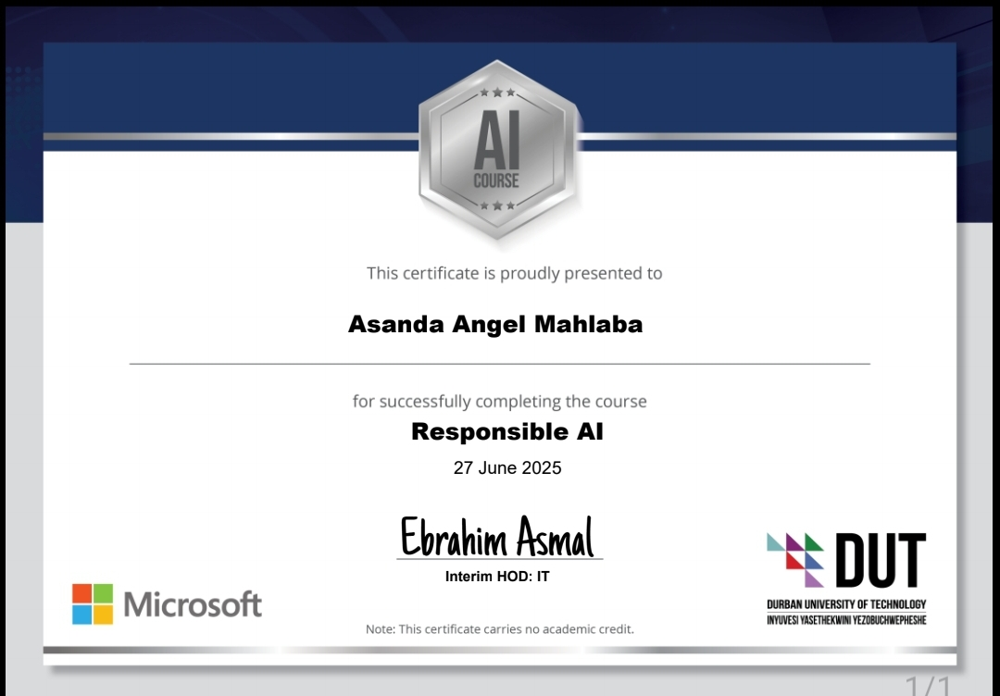
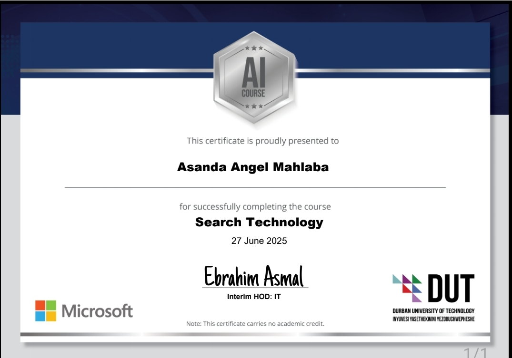
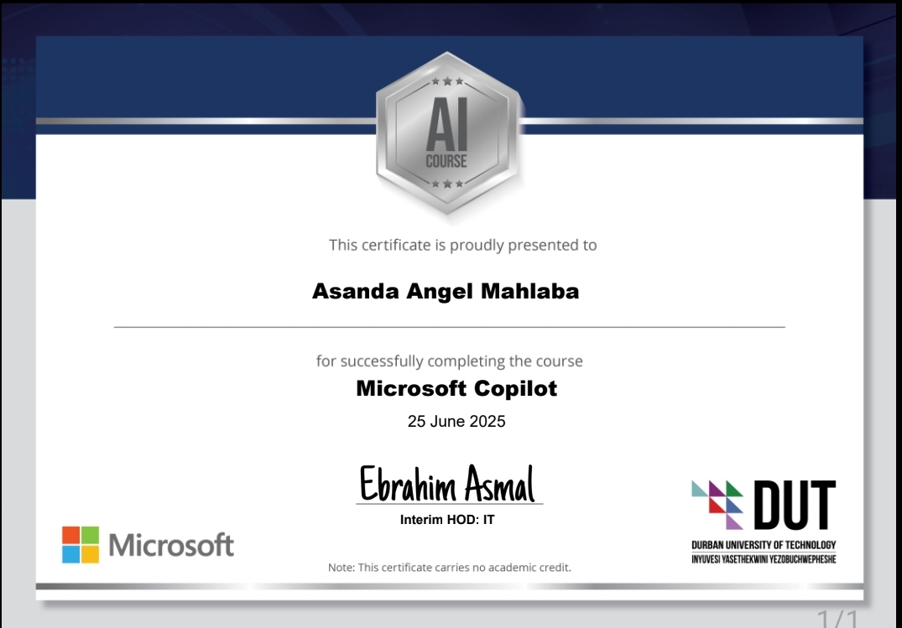
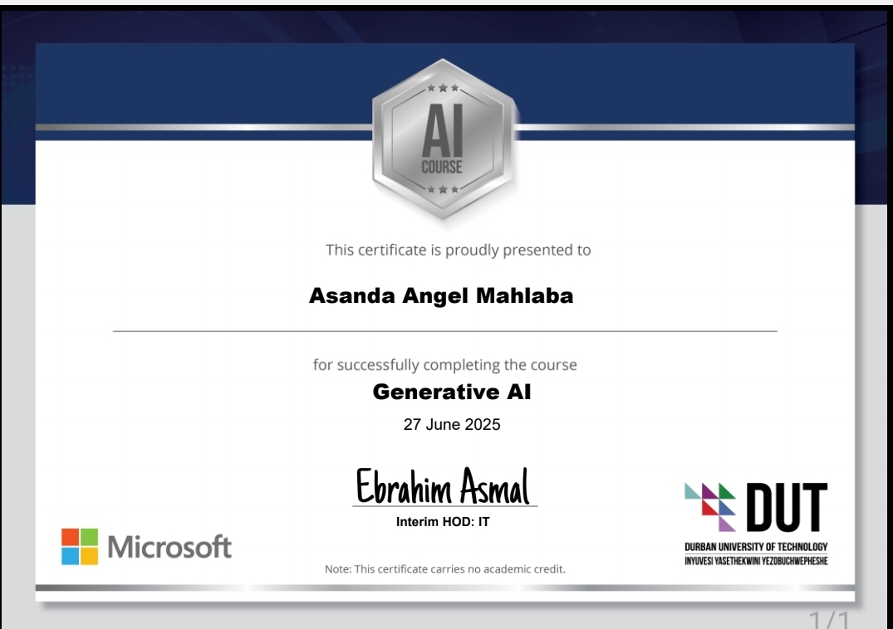
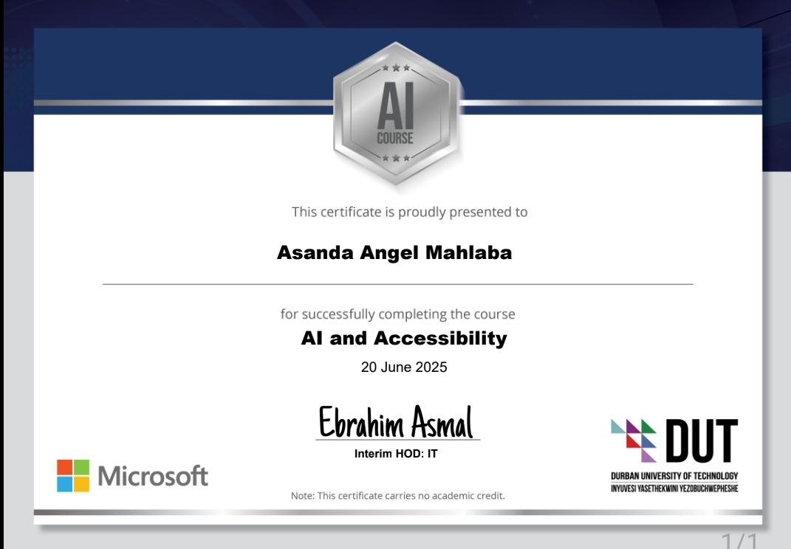

🎓 Quinn Asanda Certificates (7)
Web Development,Design & Development
Responsible.AI

Search Technology

Microsoft Copilot

Generative AI

AI & Accessibility

PROMPT ENGINEERING
Home
Certificate
Project
Live